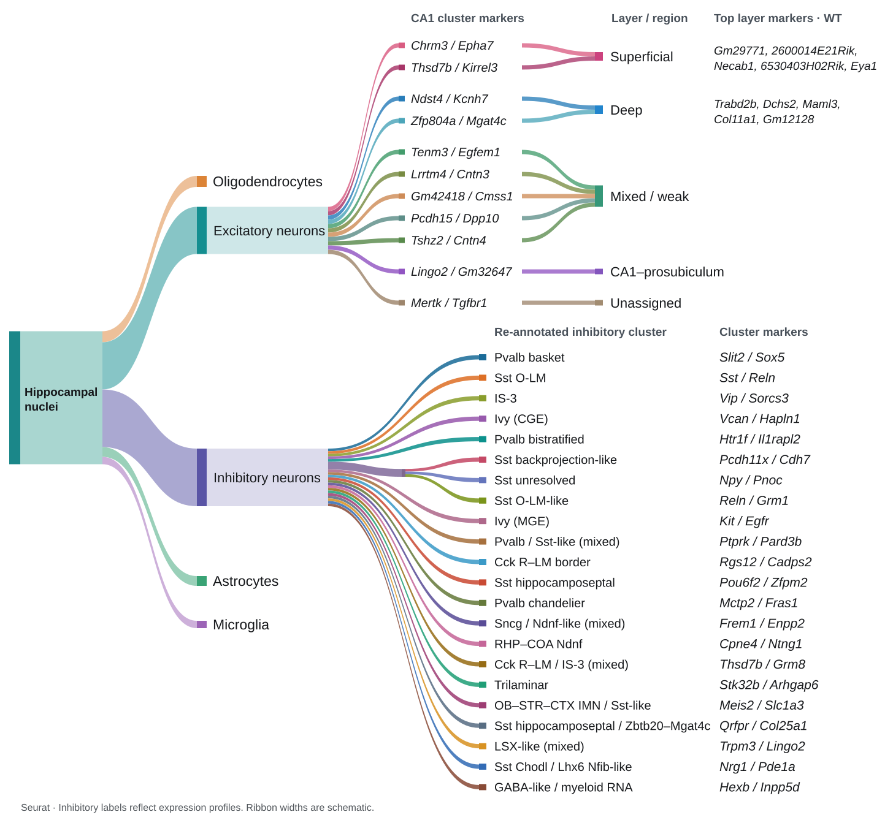

← SATB2 atlas
Hippocampal cell hierarchy
Seurat annotations across P60 WT and
Satb2
cKO mice
Download SVG

Ribbon widths are schematic. The superficial and deep marker lists use paired layer expression across six WT mice.